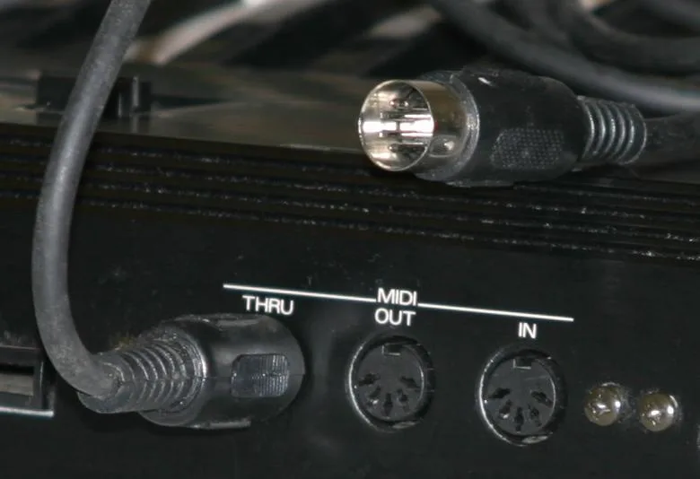

miditool is a Rust command-line program that sits between a MIDI keyboard and a DAW. It opens the keyboard's input port, runs every event through an effect graph described in a small KDL file, and republishes the result on a virtual output port. To the DAW that port looks like any other MIDI device, one that happens to carry a scrambled keyboard, stochastic note clouds, or a twelve-tone discipline. A minimal config is four lines: an input substring to match the keyboard, an output virtual="miditool Out", and a couple of effect nodes like shuffle-lock seed=42 and velocity-curve gamma=0.8.
It is built for live performance on an 88-key piano, which sets the engineering constraints: the processing path never allocates, every random effect is seeded and reproducible, and a note that goes on is guaranteed to come off, even if the mapping changes while the key is held.

{kind=link}
The signal path
The engine is three threads connected by lock-free single-producer single-consumer rings from rtrb. The MIDI input callback does almost nothing: it stamps the raw packet with elapsed nanoseconds on a single monotonic clock, pushes it into an input ring, and unparks the graph thread. The graph thread owns the pipeline: it decodes packets, runs events through the effect graph, and every 5 ms advances free-running effects on a steady tick, so generators keep emitting when nobody is playing. Its output feeds a second ring into the scheduler thread, which owns the output port and sends each event at its intended time, parking until roughly half a millisecond before the next deadline and spinning the final stretch. Both realtime threads are promoted to realtime priority via audio_thread_priority where the OS allows it.
An event's time field is the moment the scheduler sends it: delaying an event means adding a delta to its timestamp, and repeats are computed up front at note time, so time-based effects never sleep. The decoder handles MIDI 1.0 running status and normalizes note-on velocity zero to note-off; SysEx and system common messages are not modeled and pass through verbatim, the one place the hot path is allowed to allocate. Port discovery and connection go through midir, which backs onto CoreMIDI, ALSA, or WinMM. miditool bench wires a pass-through engine between two virtual ports and reports round-trip latency percentiles for the whole stack, OS MIDI service included.
The effect graph
The graph model follows mididings: chain { } runs children in series, fork { } runs them in parallel on a copy of the event and merges outputs in order, dropping exact duplicates so fork { pass; transpose 12 } doubles notes without doubling every controller message. Filters like key-range and only-channels gate only the event classes they understand: a key-range filter passes pedal and pitch bend untouched, so narrowing a chain to half the keyboard does not strand the sustain pedal. A split keyboard with different treatments per hand is one fork and a few filters.
Everything an effect emits goes into a fixed-capacity arrayvec buffer of 128 events. Overflow drops events and increments a diagnostic counter rather than blocking or allocating, and effects that emit self-contained note-on/note-off pairs push them through an all-or-nothing helper, so truncation can never keep an on and drop its off.
Seeded randomness
Every stochastic effect owns a PCG generator (Pcg64Mcg) seeded from its config, with independent streams derived by running SplitMix64 over the (seed, stream) pair. The same seed produces the same performance forever, across runs and machines. The founding pair of effects shows why that matters: shuffle-lock draws one seeded Fisher-Yates permutation of the keys at construction, optionally constrained to trade places only within an octave or a pitch class, so the keyboard is scrambled but stable enough to practice and learn. loose-keys re-draws every note-on's key, uniform over a range or Gaussian around what was played, so the same key twice gives different notes.
A catalog from the twentieth century
The effects crate holds fifty-one effect modules, many of them mechanizations of 20th century composition techniques. row-snap replaces each note-on's pitch class with the next element of a twelve-tone row in any of the four classical forms; inversion reflects each pitch class about the row's first note, \( I_i = (2 r_0 - r_i) \bmod 12 \). sieve snaps keys onto a Xenakis sieve written in his residue notation ("8@0|8@3|11@5"). cluster-fist turns single notes into Cowell-style tone clusters, tintinnabuli adds a Pärt voice, klangfarben deals notes across channels in the manner of Klangfarbenmelodie, tonnetz walks the Tonnetz, and poisson-cloud bursts each key press into a seeded grain cloud around the played note.
row-snap spends a row like this one pitch class per note-on, then starts over. Wikimedia Commons{kind=link}
Time-based effects follow the emit-ahead rule. echo repeats each note with copy \(k\) landing at \(t + k\Delta\) on key \(\mathrm{key} + k \cdot \mathrm{transpose}\) with velocity \(v \cdot \mathrm{decay}^k\); with a nonzero transpose it is a canon cascade rather than a plain echo. Because note-offs get the identical treatment, a copy whose key leaves the keyboard drops together with its off, and nothing orphans.
Note-off correctness
Pitch-remapping effects share a router that records, per (channel, key), which output key each note-on produced, in a fixed 16 by 128 grid with no heap behind it. The matching note-off is routed to the note that is actually sounding, and a retrigger cuts the previous output before starting the new one. The same discipline extends across config edits: a hot reload keeps the swapped-out graph draining until every note and pedal it opened has closed, so a note held through the swap gets its note-off through the mapping that started it. Up to three old graph generations drain concurrently. At the boundary, the scheduler observes everything it sends into a note tracker, so shutdown, panic, or a killed scene can emit exactly the note-offs and pedal releases needed to silence the DAW, and nothing else.
Scenes, hot reload, and gestures
A config can group effects into named scene blocks and switch between them mid-performance; a scene marked switch="kill" silences on exit, the default lets notes ring and drain. miditool run watches the config file through notify with a 300 ms debounce, re-parses on change, and swaps the active scene's graph off the hot path. A broken edit is reported and leaves the running graph alone, so a typo never interrupts sound. A control block reserves keyboard keys as performance gestures: next scene, previous, direct jumps, and panic are consumed before the effect graph ever sees them, and an optional moments clock wanders between scenes on a seeded schedule.
Scripts in Luau
A chain can hold a script node that runs a Luau file, via mlua, as an ordinary effect leaf. Scripts run synchronously on the realtime path, which sandboxing makes tolerable: no io, no require, a 16 MB heap limit, and a 5 ms per-call budget enforced through the Luau interrupt callback. The failure mode is fail-open: the first time a handler errors or blows its budget, the node logs one line and becomes a passthrough, because a broken script must never silence the keyboard mid-performance. The API is one global on_event(ev) function returning nil to pass, false to drop, or event tables to emit, plus injected seeded rng() helpers.
The remote and the GarageBand problem
A remote node starts an axum server inside the process, serving a phone-sized control surface embedded in the binary: the scene list, a panic button, and a live monitor of outgoing MIDI over a WebSocket at roughly 30 Hz. The monitor is fed by a wait-free tap on the scheduler's send path and a bounded broadcast channel, so a slow phone loses frames instead of stalling anything.
The last problem is the DAW itself. GarageBand listens to every MIDI source at once, so it would hear both the raw keyboard and miditool's output. On macOS, input "Roland" hide=true sets the CoreMIDI kMIDIPropertyPrivate flag on the source, hiding it from every other client's enumeration while miditool runs. The flag lives in the MIDI server rather than the process, so it survives a crash; the CLI restores it on exit, and miditool unhide recovers after a hard kill by walking the device tree.